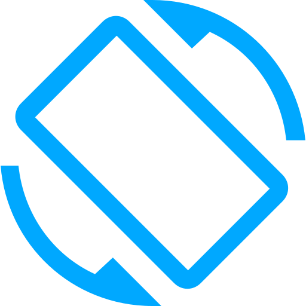

Computergrafik Online
Unser Projektteam beschäftigt sich mit dem Relaunch des Lernportals „WBT Computergrafik.Online“. Das Online-Portal dient dazu Studierenden, Auszubildenden oder anderen Neugierigen einen Überblick über die Themengebiete der Computergrafik zu bieten. Das inzwischen veraltete Online-Portal wurde von unserem Team von Grund auf neu entwickelt. Dazu gehörten das Aufarbeiten der veralteten Texte, Animationen, Simulationen, Interaktionen, Sprechertexten und die Ergänzung neuer Themen.
Diese Seite befindet sich noch in der Entwicklung
Informationen
